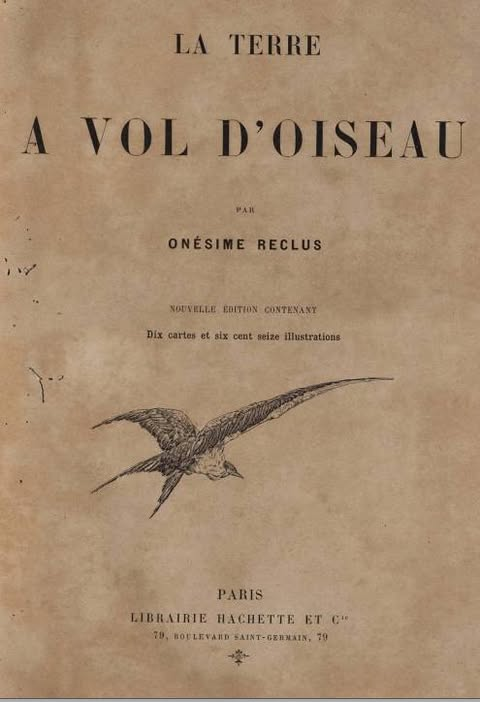

La Terre À Vol D'Oiseau
یہ فرانسیسی کتاب پہلی بار 1869 میں شائع ہوئی تھی. کتاب کے عنوان کا مطلب ہے زمین پرندے کی نظر سے، اور اس کا بنیادی موضوع دنیا بھر کا جغرافیہ، مختلف براعظموں، ملکوں، دریاؤں، پہاڑوں اور وہاں بسنے والے انسانوں کا احوال ہے۔

1
LA TERRE A VOL D'OISEAU
زمین پرندے کی پرواز سے

2
LA TERRE A VOL D'OISEAU — PAR ONÉSIME RECLUS
زمین پرندے کی پرواز سے، اونیزیم ریکلوس کی کتاب

3
La Mecque : vue de la Kaaba. — Dessin de Tomaszkiewicz, d'après une photographie.
مکہ: کعبہ کا منظر

4
Naoutchni ou bayadère. — Dessin de A. de Neuville, d'après une photographie.
ناچنے والی یا بیادیڑ

5
Cinghalais. — Dessin d'Emile Bayard, d'après une photographie.
سنگھالی باشندے

6
Chandernagor. — Dessin de J. Moynet, d'après une photographie.
چندر نگر

7
Un marchand maure à Ceylan. — Dessin d'Émile Bayard, D'après une photographie.
سیلون میں ایک مور تاجر

8
Cocotiers, à Ceylan. (Voy. p. 382.) — Dessin de A. de Bar, d'après une photographie.
سیلون میں ناریل کے درخت

9
Une place à Pondichéry. (Voy. p. 380.) — Dessin de A. de Bar, d'après une photographie.
پونڈیچیری میں ایک چوک

10
Le palais de Lahore. (Voy. p. 576. — Dessin de E. Thérond, d'après une photographie.
لاہور کا محل

11
Le temple d'Amritsar (voy. p. 373). — Dessin de Thérond, d'après une photographie.
امرتسر کا مندر

12
Secundra, près d'Agra : mausolée du grand Akber. — Dessin de Thérond, d'après une photographie.
سکندرہ: اکبر اعظم کا مقبرہ

13
Indigène de Madras. — Dessin d'Émile Bayard, d'après une photographie.
مدراس کا باشندہ

14
Le temple de Mahadéva, à Kajraha. — Dessin de E. Thérond, d'après une photographie.
کھجوراہو میں مہادیو کا مندر

15
Un carrefour à Delhi. — Dessin de A. de Neuville, d'après une photographie.
دہلی میں ایک چوراہا

16
Bombay : ouvriers du marché au coton. -- Dessin de A. de Neuville, d'après une photographie.
بمبئی: کپاس منڈی کے مزدور

17
Une plantation de thé dans l'Inde. — Dessin de Paul Langlois, d'après une photographie.
ہندوستان میں چائے کا باغ

18
Chef gond. (Voy. p. 366. — Dessin de sir John Campbell.
گونڈ قبیلے کا سردار

19
Le Gange à Cawnpore. — Dessin de H. Clerget, d'après une photographie.
کانپور میں دریائے گنگا

20
Dans les Ghâtes : le Duke's nose, à Kandallah. — Dessin de Lancelot, d'après une photographie.
گھاٹ پہاڑوں میں: کھنڈالا کے قریب ڈیوک کی ناک

21
Cachemiriens cultivateurs. — Dessin de E. Zier, d'après une photographie.
کشمیری کسان

22
Noble cachemirien. — Dessin de E. Ronjat, d'après une photographie.
کشمیری امیر

23
Au bord du Djhilam (Hydaspe). (Voy. p. 356 et 576. — Dessin de Bérard, d'après une photographie.
دریائے جہلم کے کنارے

24
Vue des monts du Karakoroum dans la vallée de Chigar. — Dessin de G. Vuillier, d'après une photographie.
وادی شگر میں قراقرم پہاڑوں کا منظر

25
L'Indus à Attok. (Voy. p. 556. — Dessin de H. Clerget.
اٹک میں دریائے سندھ

26
Le sanatoire de Simla. (Voy. p. 356 et 572.) — Dessin de G. Vuillier, d'après une photographie.
شملہ کا صحت خانہ